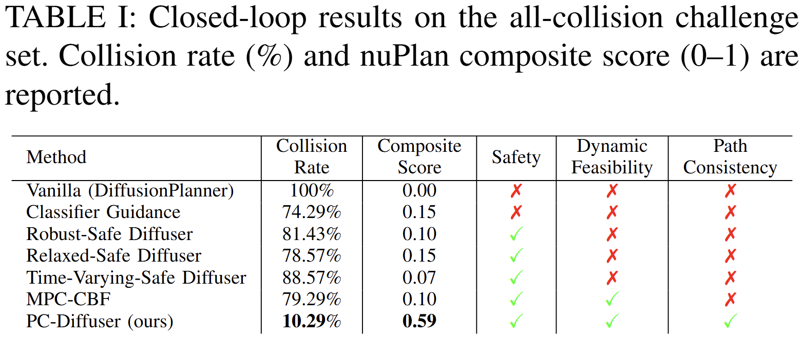
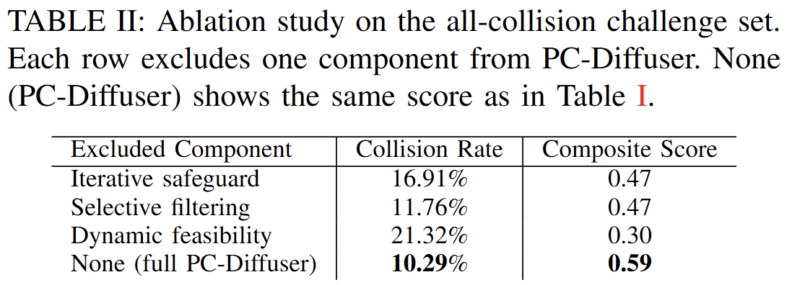

Abstract
Autonomous driving in complex traffic requires planners that generalize beyond hand-crafted rules, motivating data-driven approaches that learn behavior from expert demonstrations. Diffusion-based trajectory planners have recently shown strong closed-loop performance by iteratively denoising a full-horizon plan, but they remain difficult to certify and can fail catastrophically in rare or out-of-distribution scenarios. To address this challenge, we present PC-Diffuser, a safety augmentation framework that embeds a certifiable, path-consistent barrier-function structure directly into the denoising loop of diffusion planning. The key idea is to make safety an intrinsic part of trajectory generation rather than a post-hoc fix: we enforce forward invariance along the rollout while preserving the diffusion model's intended path geometry. Specifically, PC-Diffuser (i) evaluates collision risk using a capsule-distance barrier function that better reflects vehicle geometry and reduces unnecessary conservativeness, (ii) converts denoised waypoints into dynamically feasible motion under a kinematic bicycle model, and (iii) applies a path-consistent safety filter that eliminates residual constraint violations without geometric distortion, so the corrected plan remains close to the learned distribution. By injecting these safety-consistent corrections at every denoising step and feeding the refined trajectory back into the diffusion process, PC-Diffuser enables iterative, context-aware safeguarding instead of post-hoc repair. On the nuPlan closed-loop benchmark, PC-Diffuser reduces collision rate from 100% to 10.29% on the all-collision challenge set (a collision subset of Val14), outperforming representative safety augmentation baselines, while showing improvement in the composite driving score on both Val14 and Test14-hard relative to the base diffusion planner, demonstrating its ability to safeguard without compromising driving performance.
Methodology

Overview of the proposed PC-Diffuser safety augmentation framework.

Capsule distance diagram: each vehicle is represented by its longitudinal axis, and the capsule distance is the minimum distance between segments minus the sum of half-widths.
Results

Table I: Closed-loop results on the all-collision challenge set. PC-Diffuser achieves the lowest collision rate (10.29%) and highest composite score (0.59), satisfying safety, dynamic feasibility, and path consistency.

Table II: Ablation study on the all-collision challenge set. Each row excludes one component; removing dynamic feasibility hurts most (21.32% collision rate), and the full PC-Diffuser performs best.

Average slack activation rate (%) across denoising steps. Iterative PC-CBF shows monotonically decreasing corrections, indicating convergence to a safe trajectory.
BibTeX
@inproceedings{ku2026pc,
title={PC-Diffuser: Path-Consistent Capsule CBF Safety Filtering for Diffusion-Based Trajectory Planner},
author={Ku, Eugene and Lyu, Yiwei},
booktitle={2026 IEEE/RSJ International Conference on Intelligent Robots and Systems (IROS)},
year={2026}
}